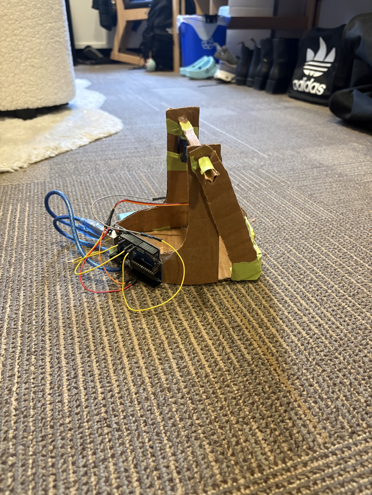

Automated Claw
My APSC 101 team and I developed an aluminum claw with cardboard components that can interact with its surroundings to grab objects of various shapes and sizes. It consisted of an Arduino board, servo motor, sonar, and joystick and was programmed with C.
My main role on the team was developing the code for our claw and managing the circuitry between the Arduino board and the electrical components. I developed a code that relied on the sonar to sense the distance from the ground which then indicated for the servo motor to activate the claw to either open or close. I also incorporated a “kill switch” with the joystick so that the claw could be forced open if the sonar was not functioning correctly. In competition, we successfully retrieved 7 objects in 3 minutes.
This project helped me to develop fundamental Arduino coding skills. I successfully programmed our claw to take input from its surroundings and communicate to its other components to ensure seamless operation. I developed my coding abilities in C and feel more confident writing this language moving forward.


Claw & Prototype